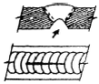
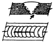
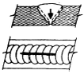
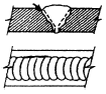
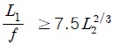
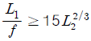
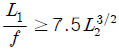
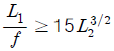

방사선비파괴검사기능사 (2015-04-04 기출문제)
1과목: 방사선투과시험법
1. 자기탐상검사에서 자화방법에 따라 검출할 수 있는 결함의 방향이 틀린 것은?
- 축통전법 : 축에 직각인 결함
- 직각통전법 : 축에 직각인 결함
- 전류관통법 : 축방향의 결함
- 자속관통법 : 원주방향의 결함
(정답률: 70%)

2. 초음파탐상시험법 중 일반적으로 결함 검출에 가장 많이 사용되는 것은?
- 투과법
- 공진법
- 연속파법
- 펄스반사법
(정답률: 77%)
3. 누설탐상검사시 기포를 형성시키는 용액으로 발포액을 액상세제, 글리세린, 물로 혼합하여 사용한다. 일반적인 혼합비율은?
- 1 : 1 : 1
- 2 : 1.5 : 3
- 4 : 2 : 1
- 1 : 1 : 4.5
(정답률: 67%)
4. 다음 비파괴검사 방법 중 시험체나 주변의 온도가 낮을 때 탐상시간에 가장 영향을 많이 받는 것은?
- 방사선투과시험
- 와전류탐상시험
- 자분탐상시험
- 침투탐상시험
(정답률: 92%)
5. 두꺼운 금속제의 용기나 구조물의 내부에 존재하는 가벼운 수소화합물의 검출에 가장 적합한 검사 방법은?
- X-선투과검사
- 감마선투과검사
- 중성자투과검사
- 초음파탐상검사
(정답률: 70%)
6. 초음파탐상검사법의 하나인 초음파두께측정에서 가장 적합한 초음파는?
- 종파
- 판파
- 횡파
- 표면파
(정답률: 73%)
7. 와전류탐상시험의 특징에 대한 설명으로 옳은 것은?
- 주로 표면 및 표면직하의 결함을 검출하는 시험법이다.
- 가는 선, 고온에서의 시험 등에는 부적합하다.
- 접촉법을 이용하므로 고속 자동화된 검사가 어렵다.
- 수 Hz에서 수백 Hz 의 교류를 주로 이용하므로 잡음 인자의 영향이 적다.
(정답률: 72%)
8. 켈빈온도(K)를 환산하는 식으로 옳은 것은?
- K = 273 + ℃
- K = 273 - ℃
- K = 473 + ℃
- K = 473 - ℃
(정답률: 74%)
9. 시험체를 자르거나 큰 하중을 가하여 재료의 기계적, 물리적 특성을 확인하는 시험 방법은?
- 파괴시험
- 비파괴시험
- 위상분석시험
- 임피던스시험
(정답률: 90%)
10. 방사선투과검사 필름의 상질의 알아보기 위해 사용하는 촬영도구는 무엇인가?
- 증감지
- 투과도계
- 콜리미터
- 농도측정기
(정답률: 84%)
11. 다음 중 비금속재료에 대한 비파괴검사를 실시하기에 적합하지 않은 시험 방법은?
- 방사선투과시험
- 초음파탐상시험
- 자분탐상시험
- 침투탐상시험
(정답률: 87%)
12. 검사할 부위를 전자석의 자극사이에 놓고 검사하는 자분탐상시험 중 가장 간편한 시험방법은?
- 극간(Yoke)법
- 코일(coil)법
- 전류 관통법
- 축통전법
(정답률: 85%)
13. 와전류탐상검사에서 신호 대 잡음비(S/N비)를 변화시키는 것이 아닌 것은?
- 진동 제거
- 필터(filter) 회로 부가
- 모서리 효과(edge offect)
- 충전율 또는 리프트 오프(lift-off)의 개선
(정답률: 66%)
14. 침투탐상시험에서 사용하는 A형 대비시험편의 재질은?
- 알루미늄합금
- 크롬합금
- 니켈합금
- 동합금
(정답률: 85%)
15. 선원-필름간 거리 60cm, 관전류 5mA에서 1분의 노출로 규정 농도의 필름을 얻었다. 관전류를 4mA로 변경했을 때 규정농도의 필름을 얻기 위한 노출시간은?
- 0.8분
- 1.25분
- 1.56분
- 1.75분
(정답률: 80%)
16. 방사선투과시험에 대한 다음 설명 중 틀린 것은?
- 핀홀법으로는 조사면의 농도분포를 측정한다.
- 계조계로는 투과사진의 상질을 결정할 수 있다.
- 투과도계로는 투과사진의 상질을 결정할 수 있다.
- 초점의 크기는 결함의 식별도에 영향을 준다.
(정답률: 46%)
17. X 선이 결정구조 내에서 회절하는 현상을 이용하여 물질의 결정구조에 대한 영상을 얻어내는 등의 방법으로 물질의 성분과 그 성분비를 알아내기 위하여 사용하는 비파괴검사방법은 무엇인가?
- 단층촬영기법(Tomography)
- 파라렉스법(Parallax method)
- X 선 회절법(X-ray diffraction method)
- 입체방사선투과검사법(Stereo radiography)
(정답률: 77%)
18. 방사선투과검사에 사용되는 방사성동위원소인 Ir-192를 설명한 것 중 틀린 것은?
- 반감기 : 74.3일
- 밀도 : 22.4 g/cm3
- 조사선량율 정수 : 1.35R/hr
- 융점 : 2350 ℃
(정답률: 50%)
19. 30Ci 선원으로 선원-필름간 거리를 100cm로 하고 20분 동안 노출을 주어 농도 2.5의 투과사진을 얻었다. 선원을 50Ci로 바꾸고 선원과-필름간 거리를 200cm로 하였을 때 동일한 농도의 투과사진을 얻기 위하여 적용해야 할 노출시간은 얼마인가?
- 12분
- 24분
- 36분
- 48분
(정답률: 48%)
20. 다음 중 γ선의 에너지를 나타내는 단위는?
- Ci
- MeV
- RBE
- Roentgen
(정답률: 74%)
2과목: 방사선안전관리 관련규격
21. 다음 중 촬영된 투과사진이 규정된 상질을 가지고 있는 지의 여부를 판단하기 위하여 확인하여야 할 내용과 가장 거리가 먼 것은?
- 필름의 유효기간
- 시험부의 유효 길이
- 투과사진의 농도 범위
- 투과도계의 식별 최소 선지름
(정답률: 64%)
22. 그림의 화살표를 통해서 용락(burn through)으로 판정할 수 있는 것은?




(정답률: 67%)
23. X선 발생장치의 X선관이 진공으로 되어 있는 이유는?
- 전자의 이동을 방지하기 위한 것이다.
- 필라멘트의 산화를 증대시키기 위한 것이다.
- 연소가 잘 이루어질 수 있도록 하기 위한 것이다.
- 전자의 이동을 원활히 하고 필라멘트를 보호하기 위해서이다.
(정답률: 84%)
24. X-선관의 내부구조와 관계가 없는 것은?
- 표적(Target)
- 프로브(Probe)
- 필라멘트(Filament)
- 포커싱컵(Focusing Cup)
(정답률: 78%)
25. 초점 크기 0.3cm, 시험체와 필름간 거리 10cm, 선원과 필름간 거리 100cm 일 때 기하학적 불선명도는 약 얼마인가?(오류 신고가 접수된 문제입니다. 반드시 정답과 해설을 확인하시기 바랍니다.)
- 0.1 mm
- 0.3 mm
- 3 mm
- 5 mm
(정답률: 66%)
26. X선 발생장치의 주요 구성부가 아닌 것은?
- X-선관
- 선원용기
- 고전압장치
- 제어 장치
(정답률: 62%)
27. 방사선 투과사진에 검은 반점이 인공결함(의사지시)이 나타나게 되는 원인은?
- 정착액으로 옮겨온 현상액
- 현상 전 필름 표면에 묻은 정착액
- 현상 전 필름 표면에 묻은 물방울
- 현상용액에 필름을 넣을 때 필름 표면에 붙은 기포
(정답률: 59%)
28. “방사선 안전관리 등의 기술기준에 관한 규칙”에서 규정하는 방사능 표지의 크기로 틀린 것은?
- 방사선 관리구역은 반지름 15cm 이상
- 방사선 동위원소의 저장함은 반지름 3cm 이상
- 방사선 동위원소의 저장실은 반지름 5cm 이상
- 방사선 발생장치의 사용실은 반지름 10cm 이상
(정답률: 48%)
29. 주강품의 방사선투과 시험방법(KS D 0227)의 내용으로 틀린 것은?
- 흠의 분류는 각각 4등급으로 나누어 분류한다.
- 촬영배치에 대하여 규정하고 있다.
- 투과사진의 구비조건을 규정하고 있다.
- 시험부의 사진농도에 대하여 규정하고 있다.
(정답률: 47%)
30. 원자력 안전법에서 규정한 방사선작업종사자의 안전에 관한 교육ㆍ훈련에 해당하는 것과 가장 거리가 먼 것은?
- 방사선장해 방어
- 방사성물질등의 취급
- 방사선안전 관계법령
- 방사선투과작업 절차서
(정답률: 77%)
31. 강용접 이음부의 방사선투과 시험방법(KS B 0845)에서 규정하는 결함의 종별과 종류가 잘못 연결된 것은?
- 제1종 : 둥근 블로홀
- 제2종 : 용입 불량
- 제3종 : 융합 불량
- 제4종 : 텅스텐 혼입
(정답률: 68%)
32. 강용접 이음부의 방사선투과 시험방법(KS B 0845)에 따라 강판의 T용접 이음부의 촬영시 투과사진이 갖추어야 할 필요조건이 아닌 것은?
- 계조계의 값
- 시험부의 유효길이
- 투과사진의 농도 범위
- 투과도계의 식별 최소 선지름
(정답률: 53%)
33. 주강품의 방사선투과 시험방법(KS D 0227)에 의해 주강품의 시험시 A급 영상질의 원칙적인 촬영배치로 옳은 것은? (단, L1은 선원과 시험체 간 거리, f는 선원의 치수, L2는 시험체의 선원쪽 표면과 필름 간 거리이다.)




(정답률: 62%)
34. 스테인리스강 용접부의 방사선 투과시험방법 및 투과사진의 등급분류방법(KS D 0237)에 따라 맞대기 이음 용접한 스테인리스강을 이중벽으로 촬영하고자 할 때 재료의 두께는 얼마로 하여야 하는가? (단, 모재의 두께는 12mm, 용접부의 모양은 살돋음이 없음)
- 12mm
- 14mm
- 24mm
- 26mm
(정답률: 62%)
35. 방사성 동위원소 취급시 반감기란 중요한 특성이다. 6반감기가 경과한 후 에너지의 강도는 초기 강도의 약 몇 % 정도가 되는가?
- 2%
- 4%
- 8%
- 13%
(정답률: 78%)
36. 강용접 이음부의 방사선투과 시험방법(KS B 0845)에 따른 강관의 2중벽 단일면 촬영방법에 적용되는 투과사진 상질의 종류에 해당되지 않는 것은?
- A급
- B급
- P1급
- P2급
(정답률: 50%)
37. 주강품의 방사선투과 시험방법(KS D 02270)에서 투과사진에 대한 상질 B급의 사진농도 범위는?
- 1.0 이상 3.5 이하
- 1.3 이상 3.5 이하
- 1.5 이상 3.5 이하
- 1.5 이상 4.0 이하
(정답률: 46%)
38. 어떤 방사성 동위원소에서 10m떨어진 곳의 선량율이 2000mR/h였다. 이 동위원소로부터 5m 떨어진 곳의 선량율은 얼마나 되겠는가?
- 2R/h
- 4R/h
- 8R/h
- 16R/h
(정답률: 56%)
39. 강용접 이음부의 방사선투과 시험방법(KS B 0845)에서 투과사진의 제1종 결함 긴길이가 모재 두께의 반을 초과한 경우에는 몇 류로 분류하는가?
- 2류
- 3류
- 4류
- 5류
(정답률: 35%)
40. 강용접 이음부의 방사선투과 시험방법(KS B 0845)에서 모재두께가 30mm인 강용접부의 투과시험에서 1종 결함이 1개인 경우 점수로서 산정하지 않는 결함의 치수는 얼마 인가?
- 0.3mm 이하
- 0.5mm 이하
- 0.7mm 이하
- 1.0mm 이하
(정답률: 41%)
3과목: 금속재료일반 및 용접 일반
41. 원자력안전법에서 규정하고 있는 일반인에 대한 방사선의 연간유효선량한도는 얼마인가?
- 0.5mSv
- 1mSv
- 5mSv
- 10mSv
(정답률: 83%)
42. SI 단위로 1 시버트(Sievert)는 종래의 단위로 몇 rem에 해당하는가?
- 1rem
- 10rem
- 100rem
- 1000rem
(정답률: 79%)
43. 다음의 특수원소 중 탄화물 형성 원소가 아닌 것은?
- Ni
- Ti
- Ta
- W
(정답률: 42%)
44. 청동과 황동 및 그 합금에 대한 설명으로 틀린 것은?
- 청동은 구리와 주석의 합금이다.
- 황동은 구리와 아연의 합금이다.
- 포금은 구리에 8~12% 주석을 함유한 것으로 포신의 재료 등에 사용되었다.
- 톰백은 구리에 5~20%의 철은 함유한 것으로, 강도는 높으나 전연성이 없다.
(정답률: 71%)
45. 청동에 소량의 인(P)을 첨가하면 탈산작용, 용탕 유동성 개선 및 강도와 내마모성의 증대가 가능하며, 스프링용으로 사용될 때는 어떤 특성이 향상되는가?
- 탄성
- 전연성
- 접합성
- 메짐성
(정답률: 83%)
46. 주형이 직각으로 되어 있는 부분에 인접부의 주상정이 충돌하여 경계가 생기므로 약하게 되는 것은?
- 핀홀(pin hole)
- 수축(shrinkage)
- 약점(weak point)
- 표면균열(surfacd crack)
(정답률: 68%)
47. 연질자성재료에 대한 설명으로 옳은 것은?
- 보자력이 크다.
- 투자율이 낮다.
- 연질자성재료에는 알니코, 페라이트 자석등이 있다.
- 외부 자장의 변화에도 자화의 변화가 크게 나타나는 이력손실이 작다.
(정답률: 43%)
48. 구조적으로 장거리 규칙성이 없고, 원자의 배열이 불규칙한 합금은?
- 제진 합금
- 비정질 합금
- 형상기억 합금
- 분산강화 합금
(정답률: 90%)
49. AI-Si 합금의 강도와 인성을 개선하기 위해 금속나트륨, 불화 알칼리 등을 첨가하여 공정의 Si 상을 미세화 시키는 처리는?
- 고용화처리
- 시효처리
- 탈산처리
- 개량처리
(정답률: 62%)
50. 강의 합금원소 중 담금질 깊이를 깊게 하고 크리프 저항과 내식성을 증가시키며, 뜨임메질을 방지하는 것은?
- Mn
- Mo
- Si
- Cu
(정답률: 57%)
51. 저용융점 합금이란 약 몇 ℃ 이하에서 용융점이 나타나는가?
- 250℃
- 350℃
- 450℃
- 550℃
(정답률: 76%)
52. 금속의 결정구조에 대한 설명으로 옳은 것은?
- 모든 금속의 결정 구조는 체심입방격자이다.
- 금속은 대부분 결정이 하나인 단결정체이다.
- 원자의 규칙적인 배열인 결정은 용해 중에 형성된다.
- 금속은 고체 상태에서 규칙적인 결정구조를 가진다.
(정답률: 76%)
53. Ni는 Ni 합금에 대한설명으로 옳은 것은?
- Ni 는 비중이 약 8.9이며, 융점은 1455℃이다.
- Fe 에 36%Ni 합금을 백동이라 하며, 열간가공성이 우수하다.
- Cu 에 10~30%Ni 합금을 인바라 하며, 열팽창계수가 상온부근에서 매우 작다.
- Ni는 대기 중에서는 잘 부식되나, 아황산가스를 품은 공기에는 부식되지 않는다.
(정답률: 55%)
54. 헤드필드(Had Fidle)강에 해당되는 것은?
- 저 P강
- 저 Ni강
- 고 Mn강
- 고 Si강
(정답률: 66%)
55. 합금 주철에 Cr을 0.2~1.5%정도 첨가할 때 나타나는 성질은?
- 흑연화 촉진
- 경도 증가
- 내식성 감소
- 펄라이트 조대화
(정답률: 62%)
56. 다음 금속 중 용해온도가 가장 낮은 것은?
- Ag
- Al
- Sn
- Mg
(정답률: 43%)
57. Fe, Ni과 같은 금속에 S의 불순물이 모여 있으며, 가공 중에 균열이 생기고 잘 부스러져 가공이 곤란해지는 성질이 있다. 이러한 성질을 무엇이라고 하는가?
- 청열 메짐
- 적열 메짐
- 가공 경화
- 상온 시효
(정답률: 69%)
58. 연납땜의 용제로 사용되는 것은?
- 붕사
- 붕산
- 산화제일구리
- 염화아연
(정답률: 57%)
59. 용접의 일반적인 단점이 아닌 것은?
- 재질의 변형
- 잔류 응력의 존재
- 품질 검사의 곤란
- 작업 공수의 감소
(정답률: 67%)
60. 용접봉에서 모재로 용융금속이 옮겨가는 용적이행 형식이 아닌 것은?
- 단락형
- 블록형
- 스프레이형
- 글로뷸러형
(정답률: 47%)